最近重温漫改动画，发现小哀真的非常喜欢拿新兰关系为题材对着柯南开玩笑（内心戏不算，单论讲出口的），于是回归到漫画把这些画面收集起来（估计不是很全，欢迎大家补充，说一下是哪一卷哪个案件就行，我会去找）。当把这些画面连起来看的时候，我脑里浮现出一个词，那就是：欲盖弥彰。
最喜欢的小哀的内心独白镇楼。
最喜欢的小哀的内心独白镇楼。
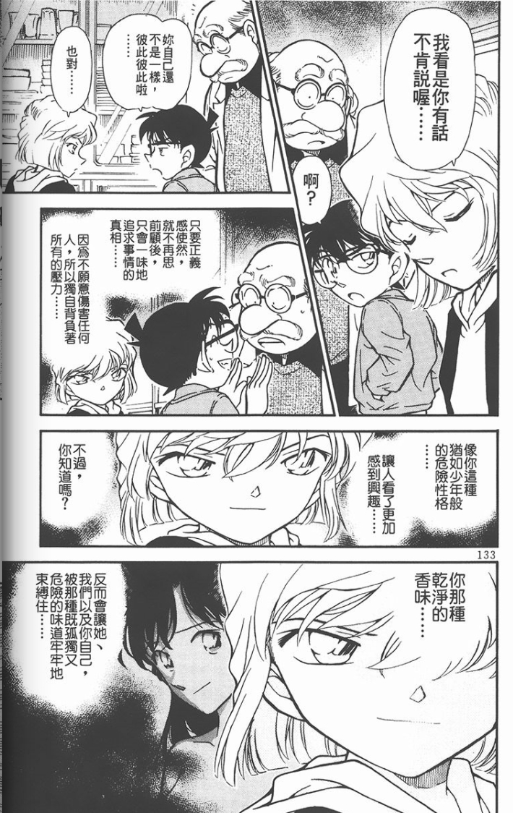
首先是31卷，调侃柯南喜欢小兰的身材。
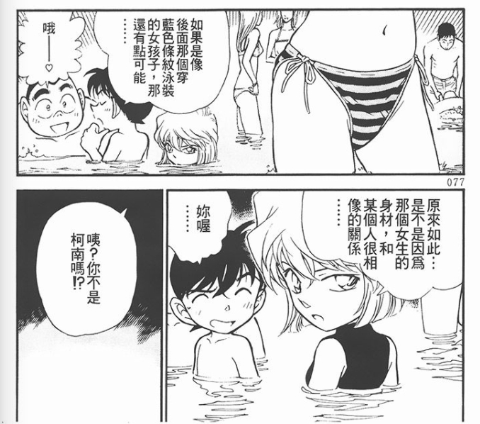
33卷，认为柯南已经从小兰手里拿到了巧克力，但是可以从巧克力中感受到小兰的忧伤。
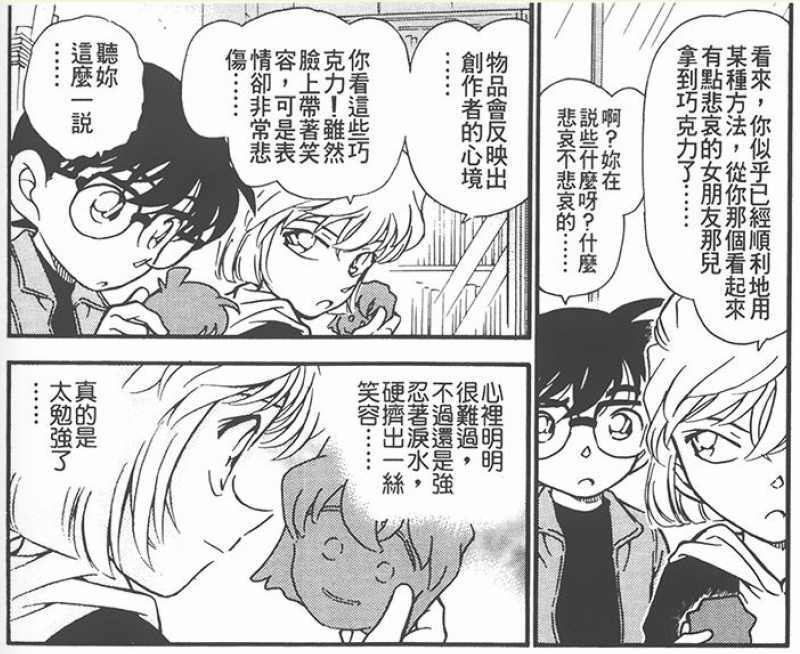
2023-12-02 04:20 | 贴吧用户_GtP9DKy:哀对人性的观察，对人心的理解真的非常敏锐2023-12-02 04:57 | 依然哀:回复 贴吧用户_GtP9DKy :对比一下镇楼图小哀对新一本质的认识，和（）对新一的认识，真是薄纱2023-12-22 23:40 | 林凰郡主:题外话小哀拿的这个咋是个倒八字眉囧脸哈哈哈哈2024-01-13 23:13 | 江风一孤同:我其实一直认为哀这里拿着饼干的内心独白既是说给柯的也是说给自己的，哀手上的饼干的表情也很勉强
36卷，认为柯南和小兰虽然“异地恋”，但是正因如此，小兰对新一的回忆会维持着美好的状态。
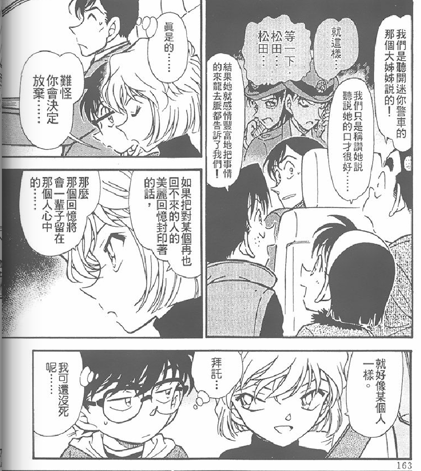
2024-01-01 22:23 | 🌸鹤鹤鹤鹤子:感觉就是因为这样的“异地”导致毛利兰会给回忆叠滤镜，所以她跟别人描述工藤和她自己面对工藤时的态度完全不同2024-01-01 23:11 | KaitouKuroba:这里柯南内心想的我可还没死，既对应前面雪莉把工藤改成死亡。而且感觉后面还真会让工藤再假死一次
44卷，认为新兰之间的感情并不会随着相隔的距离和时间而消退，恐怕这两人也不会另结新欢。
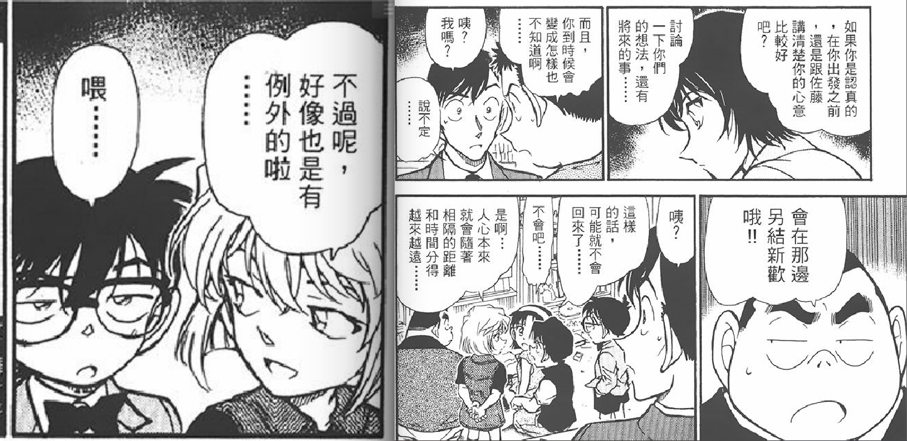
67卷，调侃柯南一直不对心上人小兰坦白。
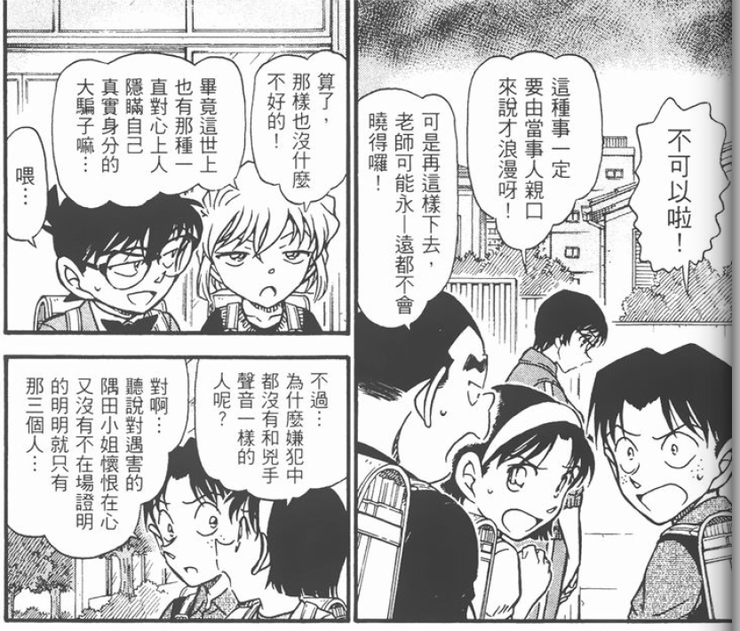
72卷，认为柯南在伦敦吃解药就是因为和小兰见面了，而且还趁机告白了。
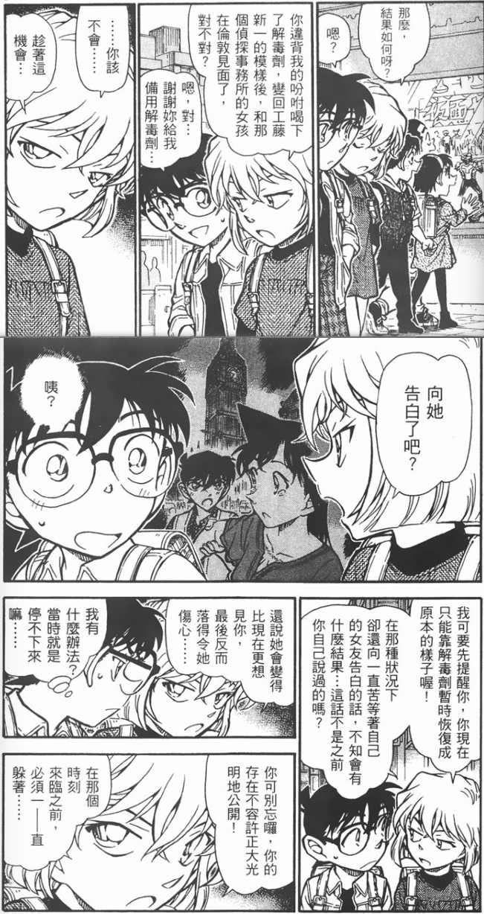
2024-01-13 13:12 | 青萝花开盛夏:这个看南英的茶室的日文原文分析，并不是情难自已一样的“当时很激动停不下来”，而是“被逼迫的停不下来”那样感觉2024-01-13 20:51 | 依然哀:回复 青萝花开盛夏 :这倒是影响不大
91卷，调侃涩狼柯南盯着小兰的大腿看。
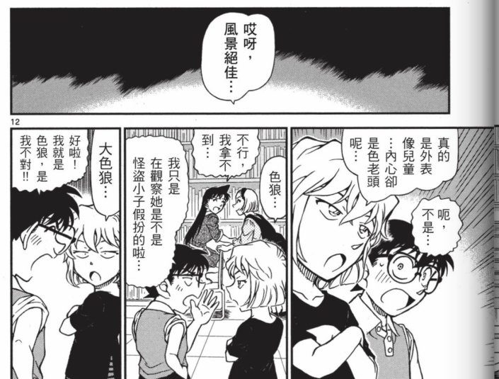
94卷，认为柯南变回新一之后，见到小兰就会做打情骂俏的事情。
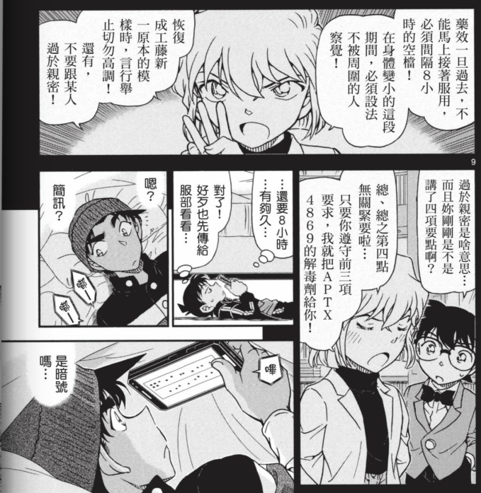
2024-01-14 12:54 | 杰物:回忆里的两人都穿上了经典皮肤
集中地看下来，有几点想法：
1.吧里历久弥新的观点了，小哀对新兰关系完完全全就处于一个非常高估、极其乐观的印象里，以至于评价过高。通读上面这些画面（当然小哀的这些话里面多多少少有开玩笑和夸大、戏谑的成分，但也能很大程度上反映出小哀的想法），不难看出，小哀心目中，新兰那就是互相爱慕，情比金坚，纵使分离也不能将他们拆散，有着深厚感情基础，的一对。但我们知道，从原作漫画展现的内容来看，事实并非如此。
1.吧里历久弥新的观点了，小哀对新兰关系完完全全就处于一个非常高估、极其乐观的印象里，以至于评价过高。通读上面这些画面（当然小哀的这些话里面多多少少有开玩笑和夸大、戏谑的成分，但也能很大程度上反映出小哀的想法），不难看出，小哀心目中，新兰那就是互相爱慕，情比金坚，纵使分离也不能将他们拆散，有着深厚感情基础，的一对。但我们知道，从原作漫画展现的内容来看，事实并非如此。
2.小哀为什么喜欢拿新兰关系为题材对着柯南开玩笑？要理解这个问题，我觉得首先得分析一下，一个人是出于什么心态，才会不厌其烦地拿一个异性的感情关系（不论是这个异性与自己的关系，还是这个异性与其他人的关系）作为调侃的题材？我觉得无非有三种情况：
①这两人就特么是异性闺蜜，同穿一条裤衩那种，无话不谈，但对对方并没有男女之情，拿感情关系出来开开玩笑怎么了？
②她/他对对方其实喜欢得不得了，但是又不敢坦白，所以就拿感情关系作谈资，摆出一副想撩但是又好像并不想撩的样子，掩人耳目。
③她/他对对方其实喜欢得不得了，但是又怕被对方发现自己的感情，所以就拿感情关系作谈资，以示自己根本不在意的样子，毕竟常理来讲真是喜欢又怎么会侃侃而谈？
后两者情况，不就是帖子标题里的四个字：欲盖弥彰？
我不由得想到一部真·党争作品《我的青春恋爱物语果然有问题》，里面有一个可爱的学妹（败犬）一色彩羽，就很喜欢调侃男主角是不是在追自己，但事实上她清楚得很，男主角根本没有要追自己的意思，这种情况我觉得就是上面说的情况②了。
而小哀，那就是情况③，生怕自己内心的小心思被察觉，所以摆出一副不在乎的样子，实际上是一种厚厚的伪装。
①这两人就特么是异性闺蜜，同穿一条裤衩那种，无话不谈，但对对方并没有男女之情，拿感情关系出来开开玩笑怎么了？
②她/他对对方其实喜欢得不得了，但是又不敢坦白，所以就拿感情关系作谈资，摆出一副想撩但是又好像并不想撩的样子，掩人耳目。
③她/他对对方其实喜欢得不得了，但是又怕被对方发现自己的感情，所以就拿感情关系作谈资，以示自己根本不在意的样子，毕竟常理来讲真是喜欢又怎么会侃侃而谈？
后两者情况，不就是帖子标题里的四个字：欲盖弥彰？
我不由得想到一部真·党争作品《我的青春恋爱物语果然有问题》，里面有一个可爱的学妹（败犬）一色彩羽，就很喜欢调侃男主角是不是在追自己，但事实上她清楚得很，男主角根本没有要追自己的意思，这种情况我觉得就是上面说的情况②了。
而小哀，那就是情况③，生怕自己内心的小心思被察觉，所以摆出一副不在乎的样子，实际上是一种厚厚的伪装。
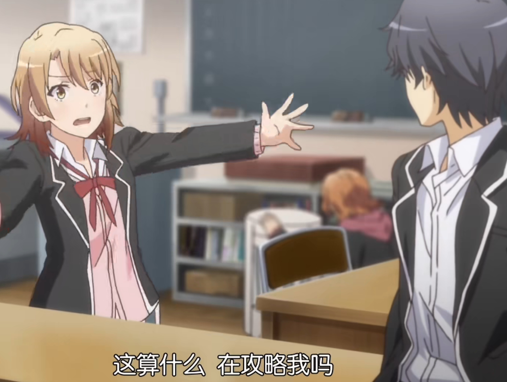
2023-12-02 06:55 | 婆桫椤-:等下2-3不是西园寺和桂言叶还有诚哥嘛2023-12-02 07:00 | 依然哀:回复 婆桫椤- :这也太久远了，怕观众们没听过2023-12-02 08:35 | 丶飞小霜⛄:回复 婆桫椤- :不然你以为罪大恶极的、走到哪撩到哪的柯南和诚哥有什么区别吗？2023-12-02 11:09 | 贴吧用户_aRSPKSQ:？？？我的天哪2023-12-02 12:51 | 婆桫椤-:，三是我以前真实的状态啊！
回复 丶飞小霜⛄ :差一个开水壶和旋转的头颅2023-12-03 05:09 | 丶飞小霜⛄:回复 婆桫椤- :《黑白还是彩照》

3.所以我觉得真不怪柯南察觉不出小哀的感情，且不论他感情白痴的设定，试想一下，对于一个老是拿自己和自己喜欢的人的关系开玩笑的女生，这个男生怎么敢设想女生是喜欢自己的？他很可能会这么想吧：你如果喜欢我，怎么可能老是半分戏谑、半分祝福地调侃我和她呢？倘若你真的喜欢我，把这样子的话语挂在嘴边，你的心不会痛么？不会感到不甘心吗？
但事实上，我们都知道，其实小哀真的会心痛，她真的会感到不甘心，只是她实在是把自己隐藏得太好了。但既然这是一种欲盖弥彰，那她的心情就并非毫无痕迹和证据可寻，只盼某个名侦探能早日解开这道谜题吧！
“没什么好不甘心的……对你来说……”【台版完全没翻译出这个意思】
但事实上，我们都知道，其实小哀真的会心痛，她真的会感到不甘心，只是她实在是把自己隐藏得太好了。但既然这是一种欲盖弥彰，那她的心情就并非毫无痕迹和证据可寻，只盼某个名侦探能早日解开这道谜题吧！
“没什么好不甘心的……对你来说……”【台版完全没翻译出这个意思】
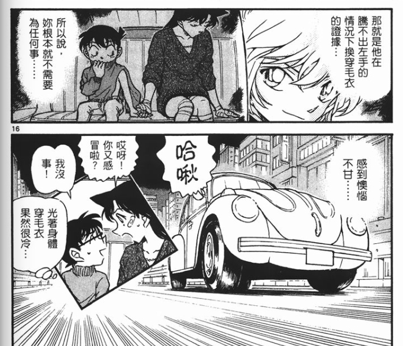
2024-01-01 09:23 | 辣舞西弟:这里不得不提一下伦敦，明确预判了提供解药会导致新兰进展，结果还是主动给了，甚至帮他擦了屁股，保驾护航。柯视角看来真是好战友2024-01-01 10:06 | 依然哀:回复 辣舞西弟 :有人说柯南对哀好只是滥好人，要我说小哀才是滥好人，付出就没想着有回报，有不少观众甚至都误以为小哀是新兰推了
这种调侃后期越来越放得开了，红修篇甚至直接暗示自己吃醋，哀作为一个真实情绪表露很少的角色这种情感表达是很难得的
而且柯南的态度也从早年有点无语的“喂……”变成了顺竿爬调情和谨遵医嘱装感冒不接近小兰，兰已经从ca关系的阻碍变成了一种共犯的调情道具，某人似乎还没注意到自己过于在意哀是否开不开心了
而且柯南的态度也从早年有点无语的“喂……”变成了顺竿爬调情和谨遵医嘱装感冒不接近小兰，兰已经从ca关系的阻碍变成了一种共犯的调情道具，某人似乎还没注意到自己过于在意哀是否开不开心了
2023-12-02 05:07 | 依然哀:是的，出于掩饰的调侃后期反而展露出真心2023-12-02 06:00 | 贴吧用户_GCEaGQG:共犯道具这点好哇2023-12-02 06:10 | 青予559🎓:这种逐步变化的感情真的是太好磕了纸是包不住火的，再怎么掩饰总会有一丝真感情流露出来
心疼哀哀
2023-12-02 06:20 | 依然哀:现在虐得越狠，以后就会越甜2023-12-02 08:09 | 贴吧用户_aU21RWE:现在甜的很，以前是真的单方面虐哀，不过以前柯子也是真暖，无时无刻不注意小哀的情绪2024-01-01 02:37 | 殇殇小天使:回复 贴吧用户_aU21RWE :你这个名字真的很一针见血诶哈哈哈哈哈
我觉得一个是在调侃中观察对方的反应，为判定对方情感收集情报，这里柯南的回复总是“喂”或者一些没说出口的内心os，导致小哀判定的信息不准确，做出了高估的判断。还有也是在自我警告，其实这个调侃双方都不算有乐趣，柯南也不会顺着侃侃而谈（恋爱白痴诶），所以在试探之外，我觉得也有不断提醒自己：你看他们进展到那一步了，快死心吧。的那种感觉，当然偶尔也会忍不住表露下情绪，毕竟人是有情绪的
2023-12-02 07:18 | 依然哀:确实，这应该不是什么有乐趣的话题……但从柯南视角看，这个异性搭档老是拿自己和女朋友取乐，应该是乐在其中的，所以更不敢相信她喜欢自己了

哀对于柯南的兴趣有一部分来自柯南吃了a药，是个活的可以沟通交流的实验体，她对柯的兴趣是对于他整个人的，也包括他重要的人际关系，对早期哀来说，柯感兴趣的事情她也感兴趣，就是那种看笼子里的小白鼠吃吃喝喝睡睡玩玩，她在边上拿个棍子捅捅他，看着小白鼠被她搞得原地发懵，她就觉得挺有意思，而且她很早发现你柯情感迟钝，只会玩得更开心 你柯一开始在灰原面前装绅士，时间长了，老是被灰原抓包色狼，后面干脆直接摆烂，就是摆烂才能跟灰原掰扯掰扯，之前太要脸了，灰原每次逗他他都还不了嘴只能吃瘪
你柯一开始在灰原面前装绅士，时间长了，老是被灰原抓包色狼，后面干脆直接摆烂，就是摆烂才能跟灰原掰扯掰扯，之前太要脸了，灰原每次逗他他都还不了嘴只能吃瘪
你柯一开始在灰原面前装绅士，时间长了，老是被灰原抓包色狼，后面干脆直接摆烂，就是摆烂才能跟灰原掰扯掰扯，之前太要脸了，灰原每次逗他他都还不了嘴只能吃瘪2023-12-02 09:33 | 依然哀:哈哈初期可能确实是这样吧，越往后感情就越纠结了
我认同这种分析